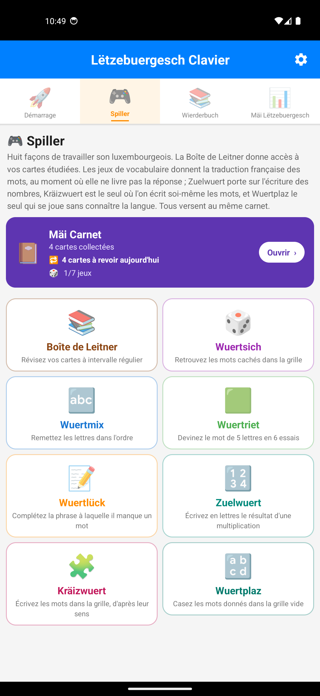
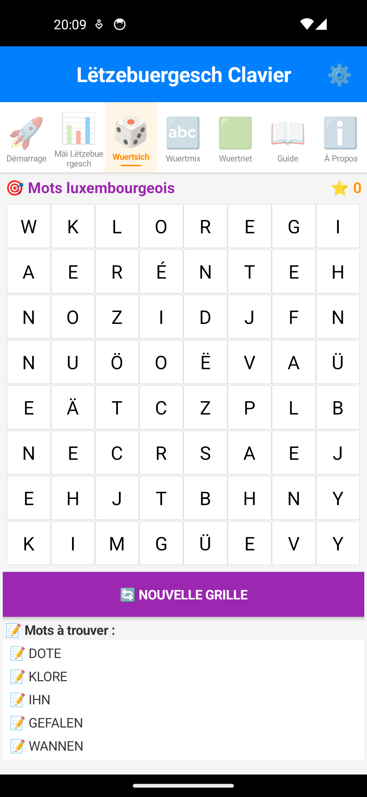

Dossier · document 5
Dossier de presse
Un clavier Android pour écrire en luxembourgeois : gratuit, sans publicité, sans permission réseau, et bâti pour plus de la moitié sur les données ouvertes du Zenter fir d'Lëtzebuerger Sprooch.
Document public · septembre 2026 · version 11.6.0 de l'application
En une phrase
Lëtzebuergesch Clavier propose les mots luxembourgeois pendant la frappe, met les accents et les majuscules à votre place, et cesse de souligner votre langue en rouge.
Gratuit, sans publicité, open source, et rien de ce qui est tapé ne quitte le téléphone — l'application ne demande aucune permission réseau.
Le problème
Les claviers du marché ne connaissent pas le luxembourgeois. Ils soulignent chaque mot en rouge, corrigent Haus en Haut, et rendent pénible ce qui devrait être ordinaire : écrire un SMS dans sa langue. Et l'usage recule : au recensement de 2021, le STATEC compte 292 025 personnes parlant le luxembourgeois, contre 323 500 dix ans plus tôt — une baisse en valeur absolue, alors que la population du pays a crû de 25,7 % sur la même période. La langue s'écrit chaque jour dans les messageries, et c'est précisément là qu'elle n'est pas outillée.
Le dictionnaire luxembourgeois qu'utilisent les claviers Android compte 71 255 formes, figées depuis 2013. Sur iPhone, la situation est plus simple encore : Apple ne reconnaît pas la langue, et aucun clavier luxembourgeois n'existe.
La réponse
⌨️ Une disposition juste
QWERTZ, comme les claviers physiques du pays. é, ä et ë ont chacune leur touche, et l'apostrophe de l'élision — d'Land, s'Kanner — la sienne.
💡 Des suggestions qui savent
123 265 formes reconnues, et un modèle qui tient compte des deux mots précédents. Les majuscules des noms communs, qui portent le sens en luxembourgeois, sont restituées automatiquement.
📖 Le dictionnaire officiel embarqué
Chaque mot proposé peut être ouvert : son sens en français, ses autres formes, deux phrases d'exemple, et un lien vers l'article du Lëtzebuerger Online Dictionnaire.
🎮 Cinq jeux de vocabulaire
Mots mêlés, anagrammes, mot mystère, texte à trous et transcription des nombres — avec la traduction française du mot cherché, et une progression en huit niveaux.
🔒 Rien ne sort du téléphone
Pas de compte, pas de serveur, pas de statistique remontée. L'application n'a aucune permission réseau et fonctionne en mode avion.
🆓 Gratuit et auditable
Sans publicité, sans achat intégré, code source public sous licence MIT. Fonctionne dès Android 5.0, sur des appareils anciens.
D'où viennent les mots
C'est l'angle le moins évident et le plus intéressant : plus de la moitié de ce que l'application embarque vient des données ouvertes de l'État luxembourgeois. Le Zenter fir d'Lëtzebuerger Sprooch publie le Lëtzebuerger Online Dictionnaire en CC0 sur data.public.lu ; ce clavier est ce que cette décision produit chez un tiers.
Le détail des sources et de leur composition est sur la page Les corpus en chiffres ; la méthode de mesure sur la fiche technique.
Faits clés
| Nom | Lëtzebuergesch Clavier |
| Version | 11.6.0 (septembre 2026) |
| Plateforme | Android 5.0 et plus. Version iOS envisagée |
| Prix | Gratuit, sans publicité, sans achat intégré |
| Licence du code | MIT — github.com/famibelle/LuxKeyb |
| Données personnelles | Aucune collecte, aucune permission réseau — politique de confidentialité |
| Sources de données | Lëtzebuerger Online Dictionnaire et corpus de traduction du ZLS (CC0) ; corpus LuxAlign et LETZ de l'Université du Luxembourg ; Lexique 3.83 pour le français |
| Dictionnaire | 123 265 formes luxembourgeoises, 88 883 traduites, plus 125 348 formes françaises |
| Fonctions | Suggestions bilingues, correcteur système, disposition QWERTZ, dictionnaire embarqué avec exemples du LOD, cinq jeux, progression en huit niveaux |
| Disponibilité | Test fermé sur Google Play et APK direct |
| Auteur | Médhi Famibelle — projet indépendant, sans structure commerciale |
Visuels
Libres de reproduction dans le cadre d'un article sur l'application, avec la mention « Lëtzebuergesch Clavier ». Toutes les captures font 1080 px de large.




Également disponibles : une animation du clavier en action · une partie de Wuertriet · toutes les captures du dépôt
{kind=link}
{kind=link}
Angles possibles
- Données ouvertes, effet concret. Le ZLS publie son dictionnaire en CC0 sur data.public.lu ; ce clavier montre ce qu'un tiers en fait réellement. Un cas d'usage documenté et chiffré de l'open data luxembourgeois, pour une fois vérifiable.
- Souveraineté linguistique à l'ère de l'IA. Les modèles de langue apprennent de ce qui existe en ligne. Une langue peu écrite dans le numérique devient invisible pour eux, puis pour ses propres locuteurs. Outiller la frappe, c'est produire du luxembourgeois écrit.
- Le trou dans la chaîne. L'État a doté la langue d'un dictionnaire, d'un correcteur, d'un entraîneur d'orthographe et d'une reconnaissance vocale — mais pas d'un clavier, c'est-à-dire de l'endroit où la langue s'écrit vraiment.
- Ce qu'un corpus de presse ne sait pas. Les mots absents du vocabulaire journalistique — cuillère, fourchette, « tu travailles » — disent quelque chose sur l'écart entre la langue des médias et celle des messageries.
- Un clavier qui refuse de bluffer. La barre de suggestions reste vide quand le modèle ne sait pas, au lieu de proposer n'importe quoi. Un choix d'honnêteté rare dans une interface, et mesuré.
- Enseignement et intégration. Gratuit, sans compte, sans connexion, sans donnée à déclarer : utilisable en classe et par les 70 000 apprenants de Lëtzebuergesch Léieren Online.
Ce que l'application ne fait pas
- Aucune donnée ne quitte l'appareil. Pas de compte, pas de serveur, pas de télémétrie même anonyme.
- Ce qui est tapé n'est pas enregistré. Seuls les mots déjà présents dans le dictionnaire alimentent le compteur de progression : un mot de passe ou un code n'est jamais compté, et les champs sensibles désactivent complètement ce suivi.
- Aucun texte d'auteur n'est transporté dans le modèle de prédiction : uniquement des fréquences et des probabilités de succession.
- Le clavier ne propose de lui-même ni politique ni religion. Ces mots restent tapables, suggérés et corrigés — un clavier qui refuse des mots est cassé — mais l'application ne les met jamais en avant dans son mot du jour ni dans ses jeux.
Contact
Médhi Famibelle, auteur du projet.
medhi.famibelle@gmail.com
Échanges possibles en français, en anglais ou en allemand.
Demande d'interview, visuel manquant, question technique : écrivez directement. Une démonstration sur téléphone peut être organisée, et un simulateur en ligne permet d'essayer le clavier dans un navigateur sans rien installer.
Pour aller plus loin : la note d'opportunité · les corpus en chiffres · le comparatif avec les autres claviers · les questions fréquentes